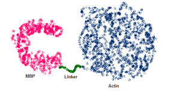
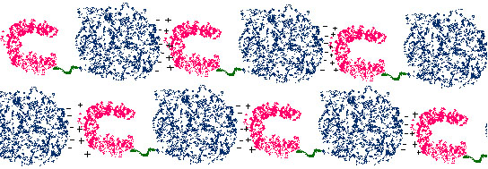

Myelin Basic Protein – An Intrinsically Unstructured Multiple Sclerosis Auto-Antigen
Multiple sclerosis (MS) is a neurodegenerative disease with autoimmune characteristics. The primary auto-antigen in MS is myelin basic protein (MBP), a major component of the myelin sheath that encases axons. We are interested in the structure of MBP, as this may shed light on the etiology of MS. Additionally, MBP is an intrinsically unstructured protein (ISP), meaning it lacks tertiary structure in the absence of its interaction partners. Improved methods for probing the structures of ISPs are needed, as more are more ISPs are being discovered.
MBP removed from its native environment of myelin lacks structure, but gains structure in the presence of lipids. Additionally, MBP is known to interact with several other proteins, including calmodulin, actin, tubulin and clathrin. In order to crystallize MBP, we plan to work with MBP in the presence of its interaction partners rather than in solution by itself. Additionally, we are working with fusion proteins between MBP and its interaction partners actin and calmodulin. Our hope is that with the combination of the presence of structure inducing lipids, the interaction partner actin (or calmodulin) and a built in linker between the two proteins that crystallization will be favorable.

Figure 1. Schematic showing the fusion protein between myelin basic protein (MBP) and actin, connected by a 5 amino acid linker. MBP is thought to form a 'C' shape based on electron microscopy. The high resolution crystal structure of actin is known. (Figure by Jessica Bruhn.)

Figure 2. Schematic outlying the idea behind our crystallization strategy. We hope to use the native MBP-actin interaction (shown by +++/ ----) to help grow the crystal. The experiment will be carried out in the presence of lipids, which will probably be required for MBP to adopt a native folded structure. (Figure by Jessica Bruhn.)
Thus far we have attempted to produce fusion proteins between MBP and calmodulin and MBP and actin. The MBP-calmodulin fusion proteins did not express in E. coli, but the MBP-actin fusion protein expresses fairly well. We are now working to purify this fusion protein and then attempt the crystallizations outlined above.